北の京芦別/北海道芦別市
〜前編〜
7月の北海道。観光シーズンである。北の国からでお馴染み、富良野のラベンダー畑である。
で、札幌から富良野への道中、そのラベンダー畑を目指して頭ん中が紫色に染まっちゃってる「うっとり」な方々の視界に無理矢理飛び込んでくるデカい観音様がある。それが北の京芦別の斬り込み隊長、北海道大観音である。
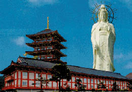 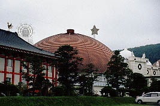 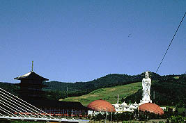
まず北の京芦別とはなんぞやという説明からはじめようか。
ここはもともと昭和45年に芦別レジャーランドという、いわゆるヘルスセンター（健康ランドですな）としてオープンした。オープン当初は大浴場やステージ、ゴーカートなどを備えたごく一般的なヘルスセンターだったようである。勿論今でもギリシャ風や石庭風大浴場は健在だ。ステージもある。私が訪れた時は何とか一座の旅芝居をやってました。
しかし現在、北の京芦別は「北に楽しい京あり」のキャッチフレーズを掲げ大きく様変わりしている。
前述の旧芦別レジャーランドの施設を本館として周囲に続々と増築を続けて、ついには極上の仏教パラダイスに姿を変えてしまったのだ。
追加された施設は以下の通り。
十二支苑神宮寺・・・昭和50年代〜昭和60年代（推定）
北海道大観音・・・平成元年
ホテル五重塔・・・平成初期
ホテル三十三間堂・・・平成五年
と、まあこんな具合にレジャーランドから徐々に抹香臭い仏教テーマパークに姿を変えていった。
特に北海道大観音は客寄せのてこ入れとして完成当時日本一の高さを誇る気合いの逸品だったが、次第に客足は遠のき現在存亡の危機にさらされている。
というわけでこれを御覧の皆様、芦別へお越し＆通りかかる際は是非、北の京芦別に寄るように。早く行かないとなくなっちゃうかもよ。
で、せっかくだから泊まってみました。
芦別に着いたのは夜の9時。従って上記のすんばらしいアトラクションは翌日の見学となる。この日は昭和40年代テイスト溢れるインテリアの本館や不必要なまでの濃密な風呂、和風と欧風の無気味な融合をみせるホテル三十三間堂などを堪能するにとどめお楽しみは翌日に持ち越し、というわけで寝た。
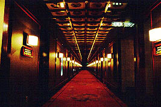 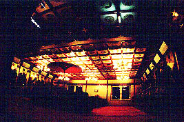
ちなみにこの日の宿泊客は少なくガラーンとしており、私の泊まった部屋のすぐ向かいに甲冑がズラリと並んでいてちょっと無気味だったことを付け加えておこう。
で、朝。
早速、十二支苑を見に行く。ここは十二支の守り本尊を並べ、それぞれの生まれ年の本尊様にお参りして下さいな、という趣向。仏教テーマパークによく見るアトラクションだ。
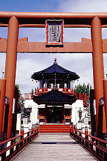
山門から鳥居を潜っていくと十二支苑が見えてくる。
パンフレットによればここは奈良の新薬師寺の北の礼拝所とされている。鳥居、十二支、聖徳太子、寺院なんだか神社なんだか良く判らないところである。
ちなみにここ北の京芦別は宗教法人ではないそーです。
ここの十二支苑は大きな池の中央部に島があり、その島を中心に十二の小島が囲んでいるというものなのだ。
中央の大きな島にはメインの橋が懸けられており、
各島には中央の島から赤い太鼓橋が懸けられている。
従って各本尊をお参りするには大鳥居を潜りメインの橋を渡った中央の島に渡り、そこから各々守り本尊が安置されている小島に渡るようになっている。
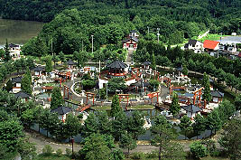 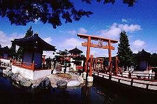 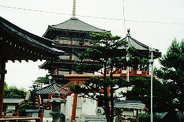
ので、池の中には十数本の赤い太鼓橋が懸けられしかも何故か赤鳥居まで設けられているので赤でごちゃごちゃしていて複雑怪奇なビューを生み出している。
中央には八角形の台座の上に八角堂が。そしてその八角堂には摩訶不思議な仕掛けがしてあった・・・
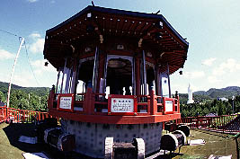 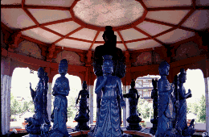
十二の神様に囲まれた聖徳太子像がぐるぐる回転しているのである。
それぞれの神様（十二神将か？）の前に賽銭箱がおかれておりそこで参拝すると聖徳太子さんが正面を向いて鐘をならしてくれるという趣向。素晴らしい。
狂ったように餌に群がる池の鯉をながめつつホテル五重塔へ向かう。11階建てのこの建物、1階から9階までは客室（ただし昨晩は誰も泊まっていた様子はなかったが）で、10階と11階が展望台になっている。
高さ56.5メートル、日本一の「大きさ」だそうだ。しかしそこはホテルの宿命、非常階段が異様に目立っている。
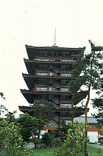 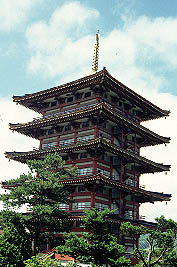
芦別市の観光パンフによると最上階には世界のオルゴールがコレクションされており喫茶店で美しい音色を堪能できる、となっていたが、行ってみるとガラーンとしていた。オルゴールはおろか喫茶店まで消滅していて廃虚一歩手前の状態になっていた。
良いのだ、所詮五重塔にはオルゴールなど似合わないのだよ・・・
考えてみればここって「終わっちゃってる」施設がやけに多い。観音像の足元に広がる庭園露天風呂や屋外プール（ここはもしかしたら7月だけどシーズンオフか？）などなど。もしかしたら五重塔の客室の方もすでに・・・
というわけで一抹の不安をはらみながら前半戦は終了。ホテルのチェックアウトを済ませて、いよいよ大観音に向かう。
珍寺大道場 HOME